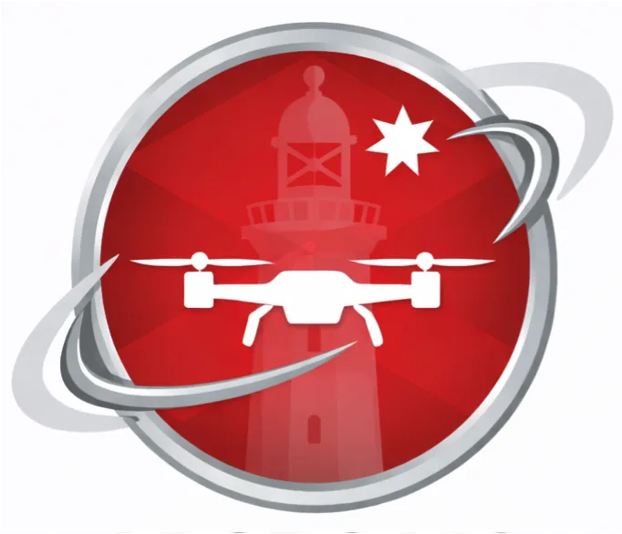

ADSRC / MACQUARIE UNIVERSITY / SYDNEYI build robots that swap batteries mid-air
Aerial autonomy, sensing systems and hardware-software integration at the Advanced Drone Systems Research Centre. I also lead Dronergy, a startup commercialising mid-air battery swapping for drones.